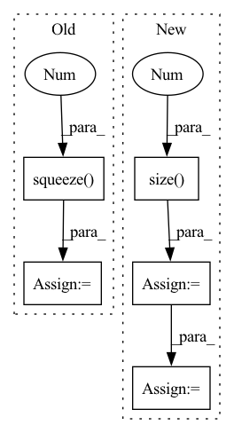

Pattern ID :24619
Before Change
labels = scaler.transform(labels) // subtract mean, divide by std
labels = torch.Tensor(labels)
if args.dataset_type == "regression_with_binning":
labels = labels.long().squeeze(1 )
if next(model.parameters()).is_cuda:
mask, labels = mask.cuda(), labels.cuda()
// Run model
model.zero_grad()
preds = model(mol_batch)
loss = loss_func(preds, labels) * mask
loss = loss.sum() / mask.sum()
if logger is not None:After Change
model.zero_grad()
preds = model(mol_batch)
if args.dataset_type == "regression_with_binning":
preds = preds.view(labels.size(0 ) , labels.size(1), -1)
labels = labels.long()
loss = 0
for task in range(labels.size(1)):
loss += loss_func(preds[:, task, :], labels[:, task]) * mask[:, task] //for some reason cross entropy doesn"t support multi target
loss = loss.sum() / mask.sum()
if logger is not None:In pattern: SUPERPATTERN
Frequency: 3
Non-data size: 5
Instances Fragment ID: 76370845
Project Name: aamini/chemprop
Commit Name: 282ebf6536c6987b85ee291850db47e34e2bac2f
Time: 2018-09-26
Author: yangk@mit.edu
File Name: train_utils.py
M Class Name: AnonimousClass
N Class Name: AnonimousClass
M Method Name: train(9)
N Method Name: train(9)
M Parent Class:
N Parent Class:
M File Name: train_utils.py
N File Name: train_utils.py
M Start Line: 49
M End Line: 63
N Start Line: 49
N End Line: 67
Before Change
(time, batch), chw = obs_size[:2], obs_size[2:]
observation = observation.view(time * batch, *chw)
conv_features = cnn(observation).squeeze(-1 ) .squeeze(-1)
if with_time:
// noinspection PyUnboundLocalVariable
conv_features = conv_features.view(time, batch, -1)After Change
img = img.view(time * batch, *chw)
conv_features = cnn(img)
conv_features = conv_features.view(conv_features.size(0 ) , -1)
if with_time:
// noinspection PyUnboundLocalVariable
conv_features = conv_features.view(time, batch, -1)
if type(observation) is dict:
observation["features"] = conv_features
return conv_features
Fragment ID: 76370846
Project Name: cherrypiesexy/imitation_learning
Commit Name: 998cc46be20ad6a3824f9bb6677b8d7daefc3cbb
Time: 2021-01-02
Author: interga@post-hardcore.ru
File Name: algorithms/nn/conv_encoders.py
M Class Name: AnonimousClass
N Class Name: AnonimousClass
M Method Name: cnn_forward(2)
N Method Name: cnn_forward(2)
M Parent Class:
N Parent Class:
M File Name: algorithms/nn/conv_encoders.py
N File Name: algorithms/nn/conv_encoders.py
M Start Line: 12
M End Line: 14
N Start Line: 8
N End Line: 30
Before Change
probs[:, 0] = torch.ones(batch_size).to(device)
else:
probs = p_select * cumprod_1_minus_p * torch.cumsum(previous_probs / cumprod_1_minus_p, dim=-1)
probs = probs.squeeze(1 )
probs = probs * encoder_masks
normalization_factor = probs.sum(-1, keepdim=True) + 1e-12
probs = probs / normalization_factorAfter Change
probs [batch_size, tgt_len, src_len]
device = hidden_states.device
tgt_len = hidden_states.size(1 )
batch_size, src_len, _ = encoder_outputs.size()
energy = self.score(hidden_states, encoder_outputs)
p_select = torch.sigmoid(energy + self.gaussian_noise(energy.size()).to(device))
cumprod_1_minus_p = self.safe_cumprod(1 - p_select)
if previous_probs is None:
probs = torch.zeros(batch_size, tgt_len, src_len).to(device)
probs[:, :, 0] = torch.ones(batch_size, tgt_len).to(device)
else:
probs = p_select * cumprod_1_minus_p * torch.cumsum(previous_probs / cumprod_1_minus_p, dim=-1)
encoder_masks = encoder_masks.unsqueeze(1).repeat(1, tgt_len, 1)
probs = probs * encoder_masks
normalization_factor = probs.sum(-1, keepdim=True) + 1e-12
probs = probs / normalization_factor Fragment ID: 76370854
Project Name: rucaibox/textbox
Commit Name: 967fc58bc72f549bde3d8cba8dcd88b0bd40e138
Time: 2020-12-06
Author: lijunyi@ruc.edu.cn
File Name: textbox/module/Attention/attention_mechanism.py
M Class Name: MonotonicAttention
N Class Name: MonotonicAttention
M Method Name: soft(5)
N Method Name: soft(5)
M Parent Class: torch.nn.Module
N Parent Class: torch.nn.Module
M File Name: textbox/module/Attention/attention_mechanism.py
N File Name: textbox/module/Attention/attention_mechanism.py
M Start Line: 163
M End Line: 169
N Start Line: 162
N End Line: 175